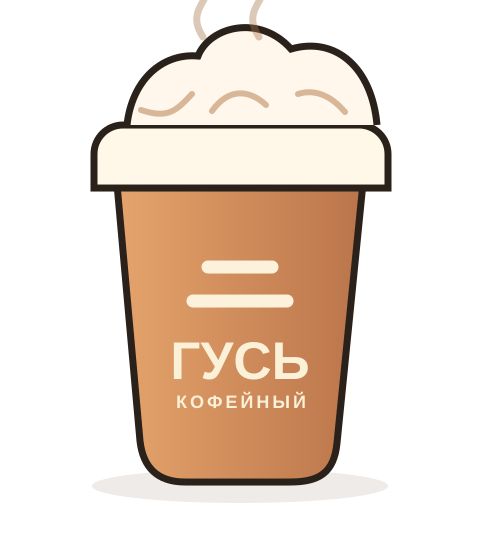
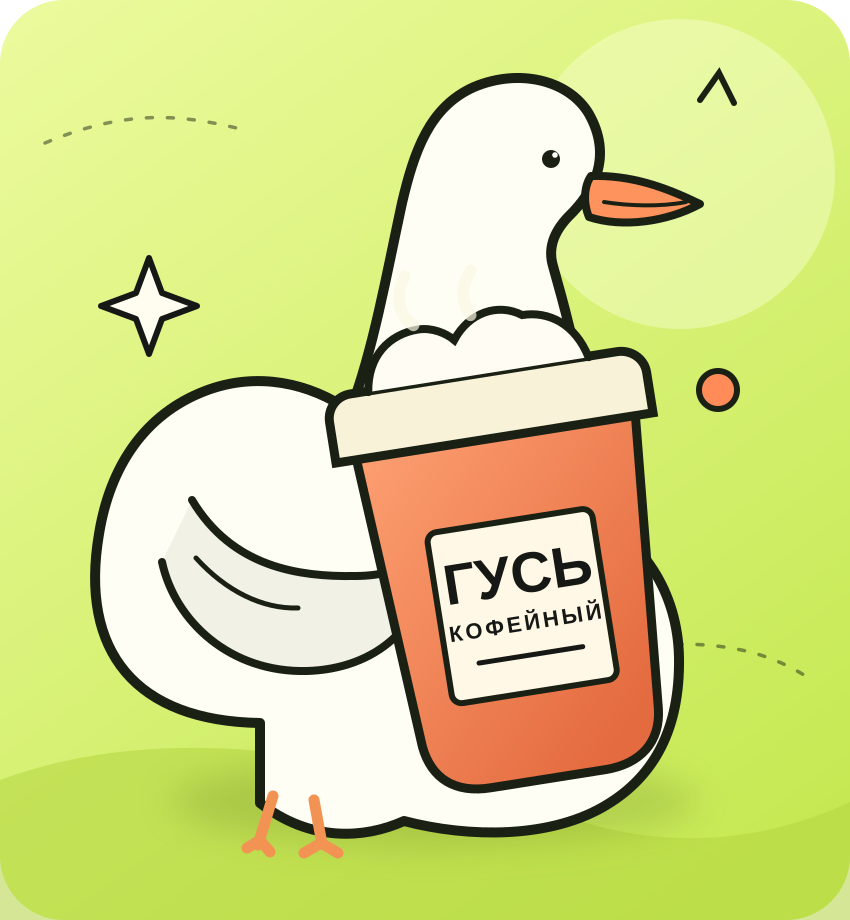
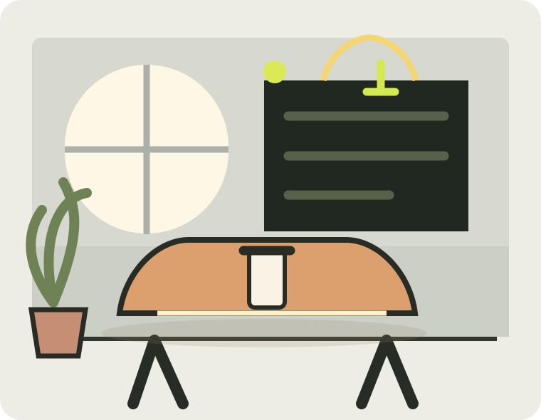

01 / КОФЕ

Капучино
Любимая классика с нежной пенкой.
КОФЕЙНАЯ КЛАССИКАХороший кофе, вкусные десерты и немного гусиного настроения. Место, в которое хочется возвращаться.

Забежать за кофе по дороге. Остаться поболтать. Прийти с другом, детьми или с любимым хвостиком. В «Гусе» для хорошего момента не нужен особый повод.
Посмотреть кофейню на карте
МЕСТО ДЛЯ СВОИХ«Сырная пенка в „Гусь Кофейный“ — это отдельная история!»
«Можно посидеть внутри или на крыльце».
«Дети пили какао, такого замечательного какао я еще не пробовала».
Встретим, нальём любимый кофе и обязательно поднимем настроение.